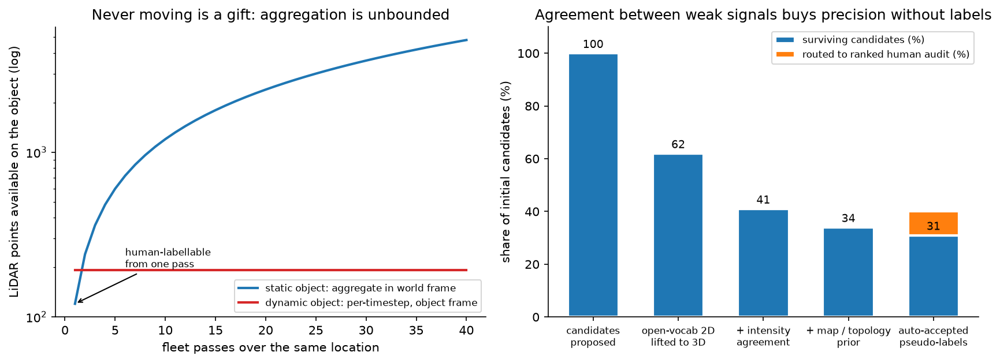

Novel-object 3D detection from unlabeled fleet data¶
Why this matters / who asks it. This is the perception design question at Waymo, Zoox, Nuro, Aurora, Wayve and the companies staffed by their alumni, and it is usually phrased as a specific, slightly awkward request: "we need to detect crosswalks (or construction cones, or emergency vehicles, or road debris). We have petabytes of multi-camera and LiDAR fleet data and no labels for this class. Design the system." The business problem is that a planner cannot yield to something the perception stack does not represent, and every new class costs a labelling programme the company cannot afford to repeat. The interviewer is testing one thing above all others: whether you accept the task as stated, or whether you notice that the task as stated is the wrong one.
TL;DR: the whiteboard in 60 seconds¶
- Open with the reframe. A crosswalk is static and planar. The 7-DOF box \((x, y, z, l, w, h, \theta)\) collapses to a 5-DOF planar polygon on the ground plane, and because the object never moves, aggregating many fleet passes over the same location gives a nearly perfect offline teacher. Design the general 3D detector properly, then show the crosswalk falling out as the all-static special case.
- Objective is asymmetric-cost detection. Never miss a vulnerable road user or a crosswalk the planner must yield to; never flood the planner with phantoms that cause phantom braking. Per-class recall floors at a fixed operating precision, not an aggregate mAP.
- The offboard auto-labelling teacher is the answer, not the onboard model. A non-causal overkill detector with ensembling, test-time augmentation and many aggregated sweeps, then bidirectional tracking into 4D tracks, then a static or dynamic fork. Waymo's 3DAL and the CTRL track-centric follow-up are the published lineage.
- Size belongs to the object, pose belongs to the moment. Static objects aggregate across every frame in the world frame and get one box broadcast to all timestamps. Dynamic objects are refined per timestep in the object's own frame with size held constant.
- Bootstrap a zero-label class with three weak signals: open-vocabulary 2D detection lifted to 3D through calibration and LiDAR frustum association, LiDAR intensity (retroreflective paint returns high intensity, so stripes survive faded paint and dusk), and map or junction-topology priors. Accept on agreement, route disagreement to a ranked human audit.
- Pretrain the LiDAR backbone for free with image-to-LiDAR cross-modal distillation from a frozen 2D foundation model (SLidR, Seal, ScaLR).
- Model: PointPillars with a CenterPoint head as the baseline, BEVFusion feature-level fusion in BEV as the production choice, plus a MapTR-style vectorised head for the crosswalk polygon. Regress yaw as \((\sin\theta, \cos\theta)\), never a raw angle.
- Keep the camera stream independent of LiDAR so a sensor dropout degrades the system instead of breaking it.
- Do not evaluate on labels from the generator you trained on. Build a small human golden set labelled by a different process, and use label-free proxies (cross-pass consistency, cross-modal agreement, temporal churn) on the unlabeled fleet.
- Deploy by distillation: lean pillar-backbone student, INT8 with quantisation-aware training, BN folding, structured pruning, and a check that INT8 did not move the vulnerable-road-user recall below its floor.
1. The reframe, and why it is the whole answer¶
Deliver this in the first 90 seconds, before any architecture.
A general 3D object is parametrised by seven degrees of freedom: centre \((x, y, z)\), extent \((l, w, h)\), and heading \(\theta\) about the vertical axis. That parametrisation carries assumptions: the object has a meaningful extent in all three dimensions, a canonical heading, and a pose that changes over time.
A crosswalk satisfies none of them in a useful way. It lies flat on the road surface, so its height is the paint thickness and its \(z\) is determined by the ground plane it sits on. It never moves, so its pose is a constant of the world instead of a state to track. Its shape is better described by a polygon than a box, because crosswalks are quadrilaterals in the common case and irregular at skewed junctions. So the estimand collapses:
where \(g\) is the ground surface, which the stack already estimates. Two consequences follow immediately, and each one changes the design.
Consequence one: the label problem mostly disappears. A static object can be observed from every pass any vehicle ever made through that intersection. Ten passes give ten times the points, from ten viewpoints, at ten lighting conditions, with ten independent chances for the paint to be unoccluded by a vehicle. Offline, with the whole log and no latency constraint, reconstructing that geometry is close to a solved problem. The teacher is nearly perfect, so the student's ceiling is set by the onboard sensing instead of by label quality.
Consequence two: the metric changes. IoU between two thin planar polygons is dominated by boundary error along the short axis, so a box-IoU metric punishes a detection that is correct for planning purposes. The planner needs the crossing region and its extent across the road; a few centimetres of boundary error along the direction of travel is irrelevant. So evaluation moves to polygon IoU in the ground plane with class-appropriate thresholds, plus a planning-relevant measure such as whether the stop line the planner derives lands in the right place.

Left: point count available on a static object grows linearly with fleet passes, because every pass adds observations in a shared world frame. A dynamic object is bounded by what one pass sees in its own frame. That difference is why static classes can be auto-labelled to near-human quality and dynamic classes cannot. Right (illustrative): agreement between independent weak signals removes most false candidates without any labels, and the residual disagreement is what humans should look at.
How to say it in the interview: the opening reframe
"Before I design a detector, I want to say what kind of object this is, because it changes the whole design. A crosswalk is static and it is planar. That means the usual seven-degree-of-freedom box is the wrong parametrisation: height is paint thickness, z is determined by the ground surface we already estimate, and the shape is a polygon, not a box. So the estimand is a five-degree-of-freedom planar polygon on the ground plane. And because it never moves, I can aggregate every fleet pass over that intersection into one reconstruction, which gives me an offline teacher that is close to perfect. So my plan is to design the general 3D detection system first, with the auto-labelling data engine at its centre, and then show you the crosswalk falling out of it as the all-static special case. If I just built a crosswalk box detector, I would be solving a harder problem than the one you have and I would not be able to reuse any of it for the next class you ask me for."
Why this separates staff from senior. A senior candidate designs a good detector for the task as stated. A staff candidate notices that the task as stated over-specifies the geometry and under-uses the data, redefines the estimand, and in doing so turns an unlabelled-data problem into a reconstruction problem the team can actually solve. The reframe is also a generalisation: everything static (lane markings, stop lines, signs, poles, kerbs) inherits it, so you have designed a class of systems instead of one detector.
2. Interview pacing¶
A 45-minute round, timed. Announce it at the start.
| Minutes | Phase | What to do |
|---|---|---|
| 0 to 7 | Problem framing | The reframe above, the asymmetric-cost objective, the scoping questions, the numbers you assume |
| 7 to 10 | High-level design | Draw diagram one (the data-engine loop), then diagram two (the BEV fusion stack), each incrementally |
| 10 to 20 | Data and features | Auto-labelling teacher, static or dynamic fork, tri-modal weak supervision, self-supervised pretraining |
| 20 to 30 | Modelling | Baseline to production architecture, the map head, losses, yaw parametrisation |
| 30 to 37 | Inference and evaluation | Distillation, quantisation, the latency budget, and the evaluation trap |
| 37 to 45 | Deep dives | Continual learning, distribution shift, long-tail classes, and whatever the interviewer pulls on |
3. Requirements & scoping¶
Functional. Detect and localise instances of one or more classes in 3D from the onboard sensor suite, at the planner's cycle rate, with a representation the planner consumes: 7-DOF boxes with velocity and uncertainty for dynamic agents, planar polygons for ground-plane classes, and a confidence the planner can threshold. Offline, produce labels for those classes at a quality that can train the onboard model.
Non-functional, with numbers to ask for.
| Quantity | Ask the interviewer | A defensible assumption |
|---|---|---|
| Sensors | "Cameras only, or camera plus LiDAR? Same suite on the whole fleet?" | 8 cameras plus a 64-beam LiDAR on the production vehicle; a subset with denser LiDAR |
| Cycle rate and latency | "Planner cycle and the perception slice of the budget?" | 10 Hz, with perception owning 40 to 50 ms of a 100 ms sensor-to-actuation budget |
| Onboard compute | "TOPS, memory bandwidth, and what else shares the SoC?" | A few hundred INT8 TOPS shared with prediction, planning and other heads |
| Range | "Detection range required, per class?" | 150 m for vehicles, 80 m for VRUs, 50 m for ground-plane markings the planner acts on |
| Fleet data | "Vehicles, daily distance, upload bandwidth, how much is retained?" | Thousands of vehicles, petabytes retained, a bandwidth-capped trigger-driven upload |
| Labels | "Any labels for this class? Human labelling budget?" | Zero for the new class; a small audit budget measured in thousands of frames |
| Timeline | "When does this have to be on the road?" | One quarter to a first onboard model, which rules out a labelling programme |
Success metrics, and the objective stated as asymmetric cost. The business objective is not mAP. It is: never miss an instance the planner must react to, and never invent one that makes the vehicle brake for nothing. Those two errors have different costs and the costs differ by class, so the metric suite is:
- Per-class recall at a fixed operating precision, reported by range bucket and by condition. For vulnerable road users the recall floor is a release gate; for a crosswalk the floor is "the crossing regions the planner must yield at".
- False-positive rate expressed in planner terms: phantom braking events per thousand kilometres, because a false positive only matters when it changes behaviour.
- Localisation error in the dimension that matters: lateral position and extent across the road for a crosswalk, longitudinal position and velocity for a vehicle.
- Stability: detection flicker between frames, which the planner feels as jerk.
State plainly that a single aggregate mAP is the wrong summary, because it averages over classes with a hundredfold difference in cost and over ranges where performance differs by a factor of three.
Questions a staff engineer asks.
- "What does the planner do with this output? If it derives a stop line, I care about the polygon's edge nearest the vehicle far more than about IoU."
- "Is the class static? That single bit decides whether fleet aggregation gives me a free teacher or whether I need per-timestep refinement."
- "Do we have a map for these areas, and is it trustworthy? A map is a strong prior and a dangerous one when the world changes."
- "What is our audit budget in frames? That sets how much of the pipeline can rely on human verification."
- "Which sensors are on the production vehicle versus the data-collection fleet? A sensor that exists only offline becomes an auto-labelling instrument."
4. Architecture: two diagrams, drawn incrementally¶
4.1 Diagram one: the data-engine loop¶
Narrate the draw order. Start with the vehicle box on the left and say "this is what ships". Then draw the upload arrow and say "this is bandwidth-limited, so triggers decide what we see". Then the offboard teacher in the middle, and say "this is where the intelligence lives, and it has no latency budget". Then the dataset and training, then the arrow back to the vehicle, and say "the loop is the product; the model is one box in it".
flowchart LR
subgraph V [Onboard, latency-bounded]
SENS[Cameras + LiDAR + ego pose] --> ONBD[Student detector<br/>lean, quantised]
ONBD --> PLAN[Prediction + planning]
ONBD --> TRIG[Triggers<br/>novelty, low confidence,<br/>cross-modal disagreement,<br/>intervention, targeted query]
end
TRIG -->|capped upload| MINE[Mining + dedup<br/>by location and scenario]
subgraph T [Offboard teacher, no latency budget]
MINE --> OK[Overkill detector<br/>ensemble + TTA + many sweeps,<br/>non-causal]
OK --> BTRK[Bidirectional tracking<br/>forward and backward in time<br/>→ 4D tracks]
BTRK --> FORK{Static or dynamic?}
FORK -->|static| AGG[Aggregate ALL frames<br/>in world frame<br/>→ one box/polygon<br/>broadcast to every timestamp]
FORK -->|dynamic| REF[Per-timestep refinement<br/>in object frame,<br/>size held constant]
end
WEAK[Tri-modal weak supervision<br/>open-vocab 2D lifted to 3D<br/>+ LiDAR intensity<br/>+ map / topology prior] --> OK
AGG --> DS[(Versioned dataset<br/>+ scenario tags)]
REF --> DS
AGG -.->|disagreement| AUD[Ranked human audit<br/>small budget]
REF -.->|disagreement| AUD
AUD --> DS
DS --> TRAIN[Train large model]
TRAIN --> DIST[Distil + quantise → student]
DIST --> EVAL[Golden set + label-free proxies<br/>+ scenario bank]
EVAL --> ONBD4.2 Diagram two: the onboard BEV fusion stack¶
Narrate this one as three columns. "Left is per-sensor encoding, and note that the camera column does not touch the LiDAR column." Then "middle is the shared BEV space, which is where they meet". Then "right is the heads, and the map head is the one that gives me the crosswalk polygon directly".
flowchart LR
subgraph CAM [Camera stream, independent]
IMG[N camera images] --> BB2D[2D backbone<br/>shared weights]
BB2D --> LIFT[View transform to BEV<br/>depth-distribution lift<br/>or BEV queries]
end
subgraph LID [LiDAR stream, independent]
PC[Point cloud<br/>+ intensity] --> VOX[Pillarise / voxelise]
VOX --> BB3D[Sparse 3D / 2D backbone]
BB3D --> BEVL[BEV feature map]
end
LIFT --> FUSE[BEV feature fusion<br/>concatenate + conv<br/>dropout-trained for sensor loss]
BEVL --> FUSE
FUSE --> TEMP[Temporal fusion<br/>ego-motion-warped memory]
TEMP --> H1[Detection head<br/>CenterPoint-style<br/>centre heatmap + regression<br/>yaw as sin, cos]
TEMP --> H2[Vectorised map head<br/>MapTR-style polygon queries<br/>→ crosswalk polygons]
TEMP --> H3[Occupancy / ground surface]
BEVL -.->|independent late path| MON[LiDAR-only detector<br/>runs as a monitor]
H1 --> OUT[Tracked outputs to planner]
H2 --> OUT
MON -.->|disagreement alarm| OUT5. Data: the auto-labelling teacher¶
This is the heart of the answer, and it deserves the largest block of the round.
5.1 The asymmetry that makes it work¶
The onboard model is causal (it may only use the past), latency-bounded, and runs on a fixed SoC. The offline teacher has none of those constraints. It can look forwards in time, run an ensemble with test-time augmentation, accumulate dozens of LiDAR sweeps, and take ten seconds per frame. It is solving a much easier problem, which is why its output is usable as supervision rather than being the student grading its own work.
Waymo's 3DAL (Qi et al., "Offboard 3D Object Detection from Point Cloud Sequences", CVPR 2021, arXiv:2103.05073) formalises this as an offboard pipeline: a multi-frame detector over point cloud sequences, followed by object-centric refinement models that exploit the temporal points. They report that on the Waymo Open Dataset test set 3DAL achieves the best results among LiDAR-only methods for vehicles, outperforming some camera-LiDAR fusion methods on the L1 metric.
5.2 Stage one: the overkill detector¶
Non-causal by construction. Concretely:
- Many aggregated sweeps. Transform \(K\) LiDAR sweeps into a common frame using ego-motion. For static geometry this is pure gain: the point density on the ground plane rises linearly with \(K\), and faint paint returns accumulate above the noise floor. For dynamic objects, naive aggregation smears them, which is precisely why the pipeline forks in stage three.
- Ensembling and test-time augmentation. Several architectures, several random seeds, flips and rotations, fused by weighted box fusion. Offline, an ensemble that costs 20x inference is free.
- A deliberately low score threshold. The teacher optimises recall; precision is recovered by the temporal and cross-signal agreement downstream. A candidate the detector never proposes can never be recovered; a false candidate can be killed by three later stages.
5.3 Stage two: bidirectional tracking into 4D tracks¶
Track the detections both forwards and backwards in time. A human annotator does the same thing: find the frames where the object is unambiguous, then propagate the identity into the frames where it is occluded or distant. CTRL (Fan et al., "Once Detected, Never Lost: Surpassing Human Performance in Offline LiDAR Based 3D Object Detection", ICCV 2023 oral, arXiv:2304.12315) makes this the organising principle: they observe that experienced human annotators work from a track-centric perspective, labelling objects with clear shapes first and then using temporal coherence to infer the annotations of obscure objects, and they build a bidirectional tracking module and a track-centric learning module on that observation. The paper's claim is that the resulting auto-labels surpass human-level annotating accuracy.
The output of this stage is a set of 4D tracks: object identity, and a trajectory of poses through the log, including frames where the per-frame detector saw nothing.
5.4 Stage three: the static or dynamic fork¶
Classify each track as static or dynamic (displacement over the track's lifetime, with a threshold that accounts for localisation noise), then treat them differently. The principle to state out loud, because it is the memorable line of the whole design:
Size is a property of the object. Pose is a property of the moment.
Static branch. Transform every point from every frame of every pass into the world frame and accumulate. You now have a dense reconstruction of the object from many viewpoints. Fit one box or one polygon to it, and broadcast that single geometry to every timestamp in every log where the object is visible. The benefits compound: a parked car seen from the front in one pass and the side in another gets correct extent from neither pass alone; a faded crosswalk seen at dusk in one pass and at noon in another gets its geometry from the union.
Dynamic branch. Aggregation in the world frame destroys the object, so transform the points into the object's own frame using the track's pose at each timestep, and accumulate there. That gives a dense object model from which extent is estimated once, then held constant across the track, while pose is refined per timestep against the per-frame points. Holding size constant is both physically correct (cars do not change length) and a strong regulariser that fixes the classic failure of per-frame detectors shrinking a box when the object is distant and sparse.
5.5 Bootstrapping a class with zero labels: tri-modal weak supervision¶
The teacher above needs an initial detector for the class, which does not exist. Three independent weak signals, and the point is that they fail differently:
Signal one: open-vocabulary 2D detection lifted to 3D. Run an open-vocabulary detector on the camera images with the class described in text. Grounding DINO (Liu et al., arXiv:2303.05499) detects arbitrary objects from category names or referring expressions; Detic and OWL-ViT are alternatives with different trade-offs. The 2D boxes or masks are lifted to 3D by projecting the LiDAR points into the image through the calibrated extrinsics and intrinsics, keeping the points that fall inside the mask, and fitting geometry to that frustum-associated point set. This is the same sequential fusion idea as PointPainting (Vora et al., "PointPainting: Sequential Fusion for 3D Object Detection", CVPR 2020, arXiv:1911.10150), where LiDAR points are painted with image semantics. Fails when: the class is not in the foundation model's vocabulary in a useful way, the object is at a distance where camera resolution is insufficient, or calibration is off.
Signal two: LiDAR intensity. Road-marking paint is retroreflective, so painted stripes return markedly higher intensity than the surrounding asphalt. A simple intensity-plus-geometry heuristic on the ground-plane points (points within a few centimetres of the fitted ground surface, intensity above a locally adaptive threshold, clustered into stripe-like components with consistent spacing and orientation) proposes crosswalk candidates with no learning at all. Fails when: paint is genuinely worn away, the surface is wet (specular reflection), or the surface is concrete instead of asphalt, so the contrast collapses. The virtue of this signal is that it works at dusk and at night, when the camera signal is weakest, which is exactly the complementarity you want.
Signal three: map and junction-topology priors. Crosswalks occur at junctions, at specific positions relative to stop lines and kerb ramps, and perpendicular to the direction of travel of the lane they cross. A prior derived from the road graph proposes where a crosswalk should be, which converts a detection problem into a verification problem in the common case. Fails when: the map is stale, the junction is unusual, or the crossing is mid-block.
Combination. Accept a candidate when signals agree, and route disagreement to a ranked human audit queue. Agreement between independent modalities is much stronger evidence than a high score from any one of them, because their failure modes are uncorrelated: the camera fails at night where intensity works, intensity fails on worn paint where the camera still sees the residual pattern, and the map prior fails at unusual junctions where both sensors work. The audit queue is ranked by expected information (disagreement magnitude times how often the location is driven), which is how a budget of a few thousand frames buys most of the available value.
How to say it in the interview: tri-modal bootstrapping
"For a class with zero labels I would not start a labelling programme. I would build three weak signals that fail in different ways and take their agreement. First, an open-vocabulary 2D detector like Grounding DINO on the camera images, lifted to 3D by associating the LiDAR points that project inside the mask, which is the same sequential fusion idea as PointPainting from CVPR 2020. Second, LiDAR intensity: road paint is retroreflective, so stripes stand out from asphalt in the intensity channel even when the paint is faded or it is dusk, which is precisely where the camera signal is weakest. Third, the junction topology from our road graph, which tells me where a crosswalk should be, turning detection into verification. I auto-accept where they agree and send the disagreements to a ranked audit queue. The alternative is to label a few thousand frames by hand and train a supervised detector, which is what most teams do and which costs a quarter and produces a detector for exactly one class. The trade-off with my approach is that agreement can be correlated in a way I did not anticipate, for instance if calibration error affects both the lifted 2D boxes and the intensity clustering, so I keep a human golden set labelled by a completely different process as the check."
5.6 Self-supervised LiDAR pretraining¶
The 3D backbone should not start from random weights when there are petabytes of unlabelled, calibrated, synchronised camera-LiDAR pairs sitting in storage. Image-to-LiDAR cross-modal distillation uses a frozen 2D foundation backbone as the teacher and trains the 3D backbone to match its features at corresponding locations, with no annotations of either modality.
SLidR (Sautier et al., "Image-to-Lidar Self-Supervised Distillation for Autonomous Driving Data", CVPR 2022, arXiv:2203.16258) introduced the superpixel-based version: pool 3D point features and 2D pixel features over visually similar regions and train the 3D network to match the pooled pairs. Seal (Liu et al., "Segment Any Point Cloud Sequences by Distilling Vision Foundation Models", NeurIPS 2023, arXiv:2306.09347) distils vision foundation models into point clouds with spatial and temporal consistency regularisation, and reports 45.0% mIoU on nuScenes after linear probing. ScaLR (Puy et al., "Three Pillars improving Vision Foundation Model Distillation for Lidar", CVPR 2024, arXiv:2310.17504) studies the 3D backbone, the 2D backbone and the pretraining dataset as the three levers, and reports that scaling both backbones and pretraining on diverse datasets substantially narrows the gap to fully supervised 3D features while improving robustness to domain gaps and perturbations.
The practical argument for the interview: this pretraining consumes data you already have and cannot otherwise use, it improves the low-label regime that a new class lives in, and ScaLR's finding about diverse pretraining data is directly relevant to a fleet operating in several cities. Cross-link to self-supervised learning and weak supervision & auto-labeling.
5.7 Triggers and what the fleet uploads¶
Bandwidth caps what you see, so triggers are a first-class part of the data design. For a new class specifically: a targeted query trigger ("upload clips where the open-vocabulary detector fires on this text prompt", "upload clips at junctions where the map says crosswalk and the onboard model disagrees"), plus the standing triggers (novelty, low confidence, cross-modal disagreement, driver intervention). Add location-based deduplication, because a hundred passes over the same intersection is one training location and a hundred uploads.
Keep a small uniformly random upload stream alongside the triggered one, so that prevalence and recall can be estimated on an unbiased sample. Without it, every rate you compute is conditioned on the triggers.
6. Modelling¶
6.1 Baseline: PointPillars with a CenterPoint head¶
Start here and say why. PointPillars (Lang et al., CVPR 2019, arXiv:1812.05784) discretises the point cloud into vertical pillars, encodes each pillar with a small PointNet, scatters the result into a 2D pseudo-image, and runs a standard 2D convolutional backbone. That last step is the reason it ships: 2D convolution is the best-optimised operator on every accelerator, so the pillar approach turns 3D detection into something the hardware is already good at.
CenterPoint (Yin, Zhou & Krähenbühl, "Center-based 3D Object Detection and Tracking", CVPR 2021, arXiv:2006.11275) replaces anchor boxes with a centre heatmap: detect object centres as keypoints, regress size, orientation and velocity from the centre feature, and optionally refine in a second stage. It removes anchor design and the axis-alignment problem that anchors have with rotated boxes, and the paper reports state-of-the-art results on nuScenes (65.5 NDS, 63.8 AMOTA for a single model) and first place among LiDAR-only submissions on the Waymo Open Dataset at the time.
6.2 Production: BEV feature-level fusion¶
BEV is the right shared space, for three reasons worth stating explicitly:
- Objects do not overlap in BEV. Two cars occupy disjoint ground area, unlike in the image plane where occlusion is the norm. That makes the assignment problem easier and the representation denser in information.
- Scale is roughly constant with range. A car is the same number of metres at 10 m and at 100 m, so a convolutional backbone with a fixed receptive field is well-matched, unlike in the image plane where apparent size varies by an order of magnitude.
- It is the frame the planner works in. No coordinate transform between perception's output and the consumer's input, and no ambiguity about what a detection means.
The fusion spectrum, with the decision:
| Level | Example | What it buys | What it costs |
|---|---|---|---|
| Early (input) | PointPainting: paint points with image semantics before the 3D backbone | Simple, strong gains from semantics | Calibration-brittle; a small extrinsic error corrupts every painted point; tightly couples the two sensors |
| Feature (BEV) | BEVFusion: encode each modality independently, fuse the BEV feature maps | Best accuracy; each stream keeps its own strengths; the camera stream does not depend on LiDAR | Needs training data that covers sensor dropout; harder to attribute an error to a modality |
| Late (object) | Independent detectors per modality, fused at track level | Independently validatable paths, which a safety case likes; graceful under sensor loss | Cannot combine sub-threshold evidence; association errors |
Recommendation: feature-level fusion for the main path, plus an independent LiDAR-only detector running as a monitor. BEVFusion (Liu et al., ICRA 2023, arXiv:2205.13542) unifies camera and LiDAR features in a shared BEV space, and its architectural property that matters most here is that the camera stream is computed independently of LiDAR, so the loss of one sensor degrades the system instead of breaking it. Train with modality dropout so the network has seen inputs with a missing or degraded stream. The late-fusion monitor gives the safety case an independent path and gives monitoring a disagreement signal that needs no labels.
How to say it in the interview: why feature-level fusion, and the independence property
"I would fuse at the feature level in BEV, with an independent LiDAR-only detector running alongside as a monitor. BEVFusion, from ICRA 2023, unifies camera and LiDAR features in a shared bird's-eye-view space, and the property I care about is that the camera branch is computed independently of the LiDAR branch, so if the LiDAR degrades in spray or the camera is blinded by sun, the system loses accuracy instead of falling over. The alternative at the early end is PointPainting, which paints points with image semantics before the 3D backbone. It is simpler and it works, and it makes the LiDAR path depend on the camera path and on the extrinsic calibration being right, so a millimetre of drift corrupts every painted point. The alternative at the late end is object-level fusion, which buys independent validation for a safety case and cannot combine evidence that is below threshold in both modalities, which is exactly the distant pedestrian case I care most about. So my design takes feature fusion for accuracy and keeps a late-fusion path as a monitor, and I train with modality dropout so the fused model has actually seen a missing sensor."
6.3 Heads, losses and the parametrisation details¶
Detection head (CenterPoint-style). A centre heatmap per class trained with a Gaussian-focal loss, plus regression heads for sub-voxel centre offset, \(\log\) extent, velocity, and heading. Regression losses are L1 or smooth-L1 on the positive locations only.
Yaw as \((\sin\theta, \cos\theta)\), never a raw angle. A raw angle regression has a discontinuity at the wrap-around: \(359^\circ\) and \(1^\circ\) are two degrees apart in the world and 358 apart in the loss, so gradients near the wrap are enormous and wrong. Predicting the unit vector \((\sin\theta, \cos\theta)\) and recovering \(\theta = \operatorname{atan2}(\hat s, \hat c)\) is continuous everywhere. For classes with \(\pi\)-symmetry (a crosswalk polygon has no front or back) use \((\sin 2\theta, \cos 2\theta)\) so the representation respects the symmetry, otherwise the network is penalised for a flip that means nothing.
Vectorised map head for the crosswalk. Predict the polygon directly, instead of segmenting the crosswalk as pixels in a BEV raster and post-processing the raster into a polygon. MapTR (Liao et al., "MapTR: Structured Modeling and Learning for Online Vectorized HD Map Construction", ICLR 2023 spotlight) models each map element as a point set with a group of equivalent permutations, which they introduce because a polygon has no canonical starting vertex or winding direction and a naive ordered-point loss punishes the network for choosing a different but equivalent ordering. They pair it with hierarchical query embedding and hierarchical bipartite matching. For the crosswalk head this is the right machinery: output is a vectorised polygon, the permutation-equivalent loss handles the symmetry, and the planner gets the geometry it wants without a raster-to-vector post-process that will need hand-tuned thresholds.
Ground-plane constraint. Predict the polygon in the ground plane and take \(z\) from the estimated ground surface instead of regressing it. It removes a degree of freedom that carries no information and prevents the physically absurd output of a floating crosswalk.
How to say it in the interview: the map head and the permutation problem
"For the crosswalk I would use a vectorised map head instead of a BEV segmentation mask with post-processing. MapTR, from ICLR 2023, models each map element as a point set with a group of equivalent permutations. Here is what that buys: a polygon has no canonical first vertex and no canonical winding direction, so if I train with an ordered-point loss, the network gets punished for producing the same polygon starting at a different corner. Their permutation equivalent modelling and bipartite matching removes that. The alternative, segmenting crosswalk pixels in BEV and vectorising afterwards, is easier to implement and pushes the hard part into a post-process with hand-tuned thresholds that will not transfer between cities. The trade-off is that a query-based polygon head has a fixed budget of queries and can miss a junction with many crossings, so I would size the query set from the data and monitor the rate at which it saturates."
6.4 Training the student on teacher labels¶
The dataset is auto-labelled, so treat label noise explicitly: weight samples by the teacher's agreement, use soft targets from the teacher's heatmap instead of hard boxes where the teacher was uncertain, and keep training on the known classes alongside the new one so the model does not lose them. Standard augmentation applies (global rotation and scaling, ground-truth paste, point dropout), with one caution: ground-truth paste of a static ground-plane class has to respect the ground surface, or you teach the model that crosswalks float.
7. Inference, deployment and the latency budget¶
Distillation. The production model is a lean student, not the teacher. Distil the large fused model into a pillar-backbone student, using the teacher's heatmaps and intermediate BEV features as targets rather than only the hard labels; feature-level distillation matters more here than logit distillation because the BEV feature map is where the geometry lives.
Quantisation. INT8 with quantisation-aware training where the accuracy budget is tight, post-training quantisation with a good calibration set where it is not. Fold batch normalisation into the preceding convolution before quantising, since a folded BN changes the weight distribution and quantising before folding leaves accuracy on the table. Structured pruning (whole channels or blocks) rather than unstructured, because unstructured sparsity rarely translates into speed on an automotive accelerator. The mechanics are in quantization.
The gate that must not be skipped. After quantisation, re-measure per-class recall by range, and specifically confirm that vulnerable-road-user recall at the operating precision has not dropped below its floor. Quantisation degrades small, distant, few-point objects first, which are exactly the safety-critical detections, and an aggregate mAP that moves by 0.3 points can hide a 4-point drop in pedestrian recall beyond 60 m.
Latency budget (illustrative, within a ~45 ms perception slice):
| Stage | Budget |
|---|---|
| LiDAR pillarisation and scatter | 6 ms |
| Camera backbone (all cameras, batched) | 14 ms |
| View transform to BEV | 5 ms |
| BEV fusion and temporal memory | 6 ms |
| Heads (detection, map, occupancy) | 8 ms |
| Tracking and output assembly | 6 ms |
Say what happens on overrun: reuse the previous cycle's output with dead-reckoned ego motion, drop the map head (which is static and tolerates a lower rate) before dropping the detection head, and escalate to a degraded mode if it persists. Multi-rate scheduling is the honest way to fit: the crosswalk polygon does not need 10 Hz, since the object has not moved since the last cycle, so running the map head at 2 Hz frees a third of its budget.
8. Evaluation: the hardest part¶
8.1 The trap, stated plainly¶
If you train the student on labels produced by the teacher and then evaluate the student against labels produced by that same teacher, you measure agreement, not accuracy. The errors are correlated by construction: wherever the teacher is systematically wrong (a marking style it does not recognise, a geometry it mis-parametrises), the student learns that error, and the evaluation confirms it. The number goes up and the vehicle does not get better.
Two fixes, and they address different halves of the problem:
Fix the measurement: an independent human golden set. A few thousand frames labelled by a different process than the one that produces training labels: different annotators, different tooling, different guidelines, and crucially sampled independently of the triggers that select training data. It is small, it is expensive, and it is the only unbiased number in the system. Never let it enter training, and re-audit it when the class definition changes.
Fix the labels: teacher diversity and disagreement-targeted audits. Use several teachers built on different signals (LiDAR-only, camera-only, map-prior-driven) and treat their disagreement as a map of where the labels are suspect. Route the top disagreements to human audit, which spends a small budget on the frames that carry the most information. Diversity in the teacher ensemble is what keeps the errors from being common-mode.
8.2 Label-free proxies on the unlabeled fleet¶
The golden set is small. To measure quality across the whole fleet, use proxies that need no labels:
- Cross-pass consistency and flake rate. For a static class, the same location driven on different days must produce the same geometry. Disagreement between passes over one intersection is a direct, label-free error signal, and the flake rate (the fraction of passes where the detection appears and disappears) is a stability metric the planner cares about.
- Cross-modal agreement. The rate at which the LiDAR-only monitor and the fused model disagree, tracked over time and by region. A rise means something changed in one modality.
- Temporal churn. Within a single log, how often a detection flickers on and off for an object that cannot have moved. Pure noise, measurable without labels.
- Geometric plausibility. Crosswalks perpendicular to their lane, within the junction, with stripe spacing in the legal range. Violations are near-certain errors.
These proxies do not tell you absolute accuracy, and they detect regressions and regional degradation far faster than any human-labelled set, which is why they belong in monitoring rather than in the release gate.
8.3 Which metric definition: Waymo or nuScenes¶
Report both, and know why they differ.
Waymo Open Dataset uses 3D IoU-based matching with thresholds of 0.7 for vehicles and 0.5 for pedestrians and cyclists, and extends AP into APH, which weights average precision by heading accuracy so that a detection with a reversed heading is penalised. Metrics are broken into difficulty levels (L1 and L2), where L2 includes objects with very few points.
nuScenes matches by BEV centre distance with thresholds of 0.5, 1, 2 and 4 m instead of IoU, and combines mAP with five true-positive error metrics (translation, scale, orientation, velocity, attribute) into the NDS, defined as a weighted combination of mAP and the complements of those errors.
The reason to report both: IoU matching is strict about extent and is the right measure for a planner that reasons about occupancy, while centre-distance matching is more forgiving of extent error and more informative for classes where box overlap is ill-defined, which is precisely the thin planar case this chapter is about. For the crosswalk specifically, the primary metric should be polygon IoU in the ground plane with a threshold set from planning tolerance, with centre-distance as a secondary and a planner-facing measure (does the derived stop line land within X cm) as the number that decides a release.
How to say it in the interview: never grade yourself with your own labels
"The evaluation is where this design is most likely to fool us, so let me be explicit. If I train the student on teacher labels and then score the student against teacher labels, I am measuring agreement between two models whose errors are correlated by construction, and the number will improve while the car does not. I fix the measurement with a small human golden set labelled by a different process, different annotators, different tooling, sampled independently of the triggers that select training data, and never used for training. And I fix the labels separately, with a diverse teacher ensemble whose disagreements point at where the labels are suspect, audited by humans on a budget. For scale, I use label-free proxies across the fleet: cross-pass consistency for static classes, since the same intersection on two days must give the same polygon, plus cross-modal agreement and temporal churn. On metric definitions I would report both families. Waymo's is IoU-based with APH weighting by heading accuracy; nuScenes matches by centre distance and rolls translation, scale, orientation, velocity and attribute errors into NDS. For a thin planar object IoU is dominated by boundary error along the short axis, so I would make polygon IoU in the ground plane the primary and keep centre distance as the secondary, with a planner-facing check on where the derived stop line lands."
8.4 The release gate¶
No regression on the scenario bank; golden-set per-class recall at the operating precision within tolerance, by range and condition; quantised-model recall floor for vulnerable road users met on the target SoC; label-free proxies stable in shadow mode; latency p99.9 within budget at temperature. The gate is a checklist because that is how it exists in practice, and the same structure as the AV perception chapter.
9. How real companies did it: as mock interviews¶
9.1 Waymo, "label the fleet with the fleet"¶
Interviewer prompt. "We have far more driving logs than we can label, and our human annotators are the bottleneck on every model we want to train. Build something that labels 3D objects better than a human can, offline."
Candidate walkthrough. Clarify: offline means no latency budget, no causality constraint, and access to the whole log including its future. Metrics: agreement with careful human labels, and the downstream quality of a model trained on the output. Data: point cloud sequences with ego pose. Model: a multi-frame detector over the sequence, then object tracking, then object-centric refinement models that use all the temporal points on each object, with static and dynamic objects handled differently. Serve: a batch pipeline, not a vehicle. Evaluate: detection metrics on a public benchmark, and then the labels' usefulness as training data.
What the source says. Qi et al., "Offboard 3D Object Detection from Point Cloud Sequences" (CVPR 2021, arXiv:2103.05073) describes the 3D Auto Labeling (3DAL) pipeline: multi-frame object detection over point cloud sequences followed by object-centric refinement models that exploit the temporal points, and reports that on the Waymo Open Dataset test set it achieves the best results among LiDAR-only methods for vehicles, outperforming some camera-LiDAR fusion methods on the L1 metric.
How to say it in the interview: the teacher is a different problem
"The model that labels should not be the model that drives. Offline I can look forwards in time, run an ensemble with test-time augmentation, and accumulate dozens of sweeps, so the teacher is solving a much easier problem than the student and its output is real supervision instead of self-confirmation. Waymo published this as 3DAL at CVPR 2021: multi-frame detection over point cloud sequences, then object-centric refinement using the temporal points, and they report the best LiDAR-only results on their test set for vehicles. The alternative is to train the student on human labels, which is the honest baseline and which costs a labelling programme per class and caps out at human consistency. The trade-off I would name is that the teacher's systematic errors become the student's, so the teacher buys me scale and does not buy me an unbiased evaluation, which is why the golden set is separately funded."
9.2 The track-centric turn, "label the way annotators do"¶
Interviewer prompt. "Our auto-labeller is good on close, dense objects and bad on distant or occluded ones, which is exactly where we need it. How would you change it?"
Candidate walkthrough. Clarify: the difficulty is per frame, not per object, and the same object is usually easy in some other frame. Model: reorganise the pipeline around tracks instead of frames: detect, then track bidirectionally so identity propagates into the frames where the per-frame evidence is weak, then learn at the track level. Data: the same logs, used differently. Evaluate: compare against careful human annotation, per range and per occlusion level, since that is where the gain should appear.
What the source says. Fan et al., "Once Detected, Never Lost: Surpassing Human Performance in Offline LiDAR Based 3D Object Detection" (ICCV 2023, oral, arXiv:2304.12315) observes that experienced human annotators work from a track-centric perspective, labelling objects with clear shapes first and then using temporal coherence to infer annotations for obscure objects, and builds a system (CTRL) with a bidirectional tracking module and a track-centric learning module on that principle, reporting that it surpasses human-level annotating accuracy.
How to say it in the interview: copy the annotator's algorithm
"The fix is to stop treating frames as independent. CTRL, at ICCV 2023, made this the organising idea: they observed that human annotators label the frames where an object is unambiguous and then propagate backwards and forwards using temporal coherence, and they built bidirectional tracking and track-centric learning to do the same, reporting auto-labels that surpass human-level accuracy. The alternative is to keep improving the per-frame detector, which improves the frames that were already easy. The cost of going track-centric is that a tracking failure is now a systematic labelling error spread over many frames instead of one bad box, so track fragmentation and identity switches become label-quality metrics I have to monitor, not just perception metrics."
9.3 Valeo and the distillation line, "use the unlabelled petabytes"¶
Interviewer prompt. "We have petabytes of synchronised camera and LiDAR data and no annotations. Is any of it useful before we label anything?"
Candidate walkthrough. Clarify: the data is calibrated and synchronised, which means every LiDAR point has a corresponding image pixel, and that correspondence is supervision without annotation. Model: freeze a strong 2D backbone, project points into the image, and train the 3D backbone to match the 2D features at corresponding locations, pooled over visually coherent regions so the matching is not pixel-noise-driven. Evaluate: linear probing and low-label fine-tuning on a 3D task, which is the regime a new class lives in.
What the sources say. Sautier et al. (SLidR, CVPR 2022, arXiv:2203.16258) introduce superpixel-based pooling of 3D point features and 2D pixel features and train the 3D network to match them, with no annotations in either modality. Liu et al. (Seal, NeurIPS 2023, arXiv:2306.09347) distil vision foundation models into point cloud sequences with spatial and temporal consistency, reporting 45.0% mIoU on nuScenes after linear probing. Puy et al. (ScaLR, CVPR 2024, arXiv:2310.17504) study the 3D backbone, the 2D backbone and the pretraining dataset, and report that scaling both backbones and pretraining on diverse datasets substantially narrows the gap to fully supervised 3D features and improves robustness to domain gaps.
How to say it in the interview: pretraining you already paid for
"Before any labels exist, I would pretrain the 3D backbone by distilling a frozen 2D foundation model through the calibration. Every LiDAR point projects into a pixel, so the correspondence is free supervision. SLidR at CVPR 2022 pools point and pixel features over superpixels and trains the 3D network to match them with no annotations; Seal at NeurIPS 2023 extends it to foundation models with temporal consistency and reports 45% mIoU on nuScenes from linear probing alone; and ScaLR at CVPR 2024 reports that scaling the backbones and diversifying the pretraining data narrows the gap to fully supervised features and improves robustness to domain shift. The alternative is random initialisation or supervised pretraining on a public dataset, which is smaller than our own fleet data and drawn from a different distribution. The trade-off is compute: this is a large pretraining run that produces no directly shippable artefact, so I would justify it on the low-label fine-tuning curve, which is exactly the regime a brand-new class sits in."
10. Trade-offs & alternatives¶
| Decision | Chosen | Alternative | When you'd flip |
|---|---|---|---|
| Estimand | 5-DOF planar polygon for static ground classes | 7-DOF box for everything | The class has real 3D extent (a barrier, a cone); then the box is correct |
| Label source | Offboard auto-labelling teacher | Human labelling programme | A genuinely novel sensor or class where no teacher signal exists; bootstrap with humans, then switch |
| Teacher design | Non-causal, ensembled, bidirectionally tracked, static/dynamic fork | A bigger single-frame model | Never; the temporal and multi-pass information is free and dominant |
| Bootstrapping | Tri-modal agreement (open-vocab 2D, intensity, map prior) | One strong signal with a threshold | One signal is enough only when it is near-perfect, which it is not for a new class |
| Pretraining | Image-to-LiDAR cross-modal distillation | Supervised pretraining on another dataset | A large in-domain labelled dataset exists, which is the situation this chapter assumes away |
| Fusion | Feature-level in BEV plus a late-fusion monitor | Early (PointPainting) | Extremely constrained compute where painting is the cheapest way to get semantics into the 3D branch |
| Detection head | Centre-based (CenterPoint) | Anchor-based | Legacy pipeline already tuned on anchors, or a class with a strongly bimodal size distribution |
| Map output | Vectorised polygon head (MapTR-style) | BEV segmentation plus vectorisation | Prototyping, where a raster head is faster to get working |
| Yaw | \((\sin, \cos)\), doubled for \(\pi\)-symmetric classes | Raw angle regression | Never |
| Deployment | Distil and quantise to a pillar student | Ship the fused teacher | Never on a fixed SoC; the teacher's job is labelling |
| Evaluation | Independent golden set plus label-free proxies | Held-out teacher labels | Never as the primary; teacher-label holdouts are useful only for tracking training progress |
Failure modes.
- Teacher bias baked into the student: invisible on teacher-labelled evaluation, and the reason the golden set exists.
- Calibration drift corrupting the 2D-to-3D lift: the bootstrapping stage silently degrades. Monitor reprojection error against static structure.
- Map prior overpowering perception: the pipeline confirms crosswalks where the map says they are and misses new ones. Measure recall specifically on crossings absent from the map.
- Wet road collapsing the intensity signal: a whole weather condition where one of three signals is dead. Report metrics by condition, and do not let the three signals be weighted by a constant.
- Query saturation in the map head: junctions with more crossings than queries. Monitor the saturation rate.
- Static assumption violated: temporary crossings at construction sites move. Detect by cross-pass disagreement at a location, and treat persistent disagreement as a change-detection event rather than as noise.
11. Staff-level follow-ups¶
How do you do continual learning without catastrophic forgetting?
Four mechanisms, and I would use them together. Freeze the shared backbone and add per-class adapters or a new head, so the representation that all classes depend on does not move. Keep an EMA teacher of the previous model and distil its predictions for the old classes while training the new one, which supplies a soft target everywhere the old model was confident. Maintain a replay buffer of old-class examples, sampled to preserve the hard cases rather than uniformly. And, the part people forget, keep pseudo-labelling the known classes during continual training: the new data has no labels for old classes, so without pseudo-labels every frame of new data is teaching the model that there are no vehicles in it. Then measure per-class metrics before and after on the golden set, since a global metric will hide a five-point drop on cyclists.
Your crosswalk detector was trained in the US. Now we launch in Europe.
The marking standards differ. The US MUTCD recognises several patterns, including transverse (two parallel lines perpendicular to traffic), continental (longitudinal bars only), ladder (transverse boundary lines plus longitudinal bars), dashed and bar pairs. The European zebra is longitudinal bars with no transverse boundary, which is close to the continental pattern but with different bar widths and spacing conventions. So a model that learned "crosswalk means two transverse lines with bars between them" fails on a zebra, and a model that learned specific stripe spacing fails on the next country. My response is to prefer signals that are invariant to the paint pattern: the geometric relationship to the junction and the lane it crosses, the kerb ramps at each end, the stop line's position, and pedestrian trajectories observed crossing there, which is a behavioural signal the fleet collects for free. Then I would retrain with the new region's data mined by the same tri-modal bootstrap, and I would report per-region metrics permanently, because an aggregate number dominated by the launch market will hide a broken new one. Faded paint is the same problem in miniature: the intensity signal degrades gracefully as paint wears, so I would make sure the model is not depending on high contrast by augmenting with simulated wear.
How do you handle genuinely rare objects, where the fleet sees one a month?
Accept that per-class supervised learning does not work at that frequency and lean on three other things. First, class-agnostic geometry: an occupancy or free-space output does not need to know what the object is to stop the vehicle driving into it, which is the safety floor for anything the taxonomy misses. Second, open-vocabulary detection as a standing trigger rather than as a detector, so the fleet mines examples continuously against text prompts and the dataset accumulates even when the model cannot yet detect the class. Third, simulation and synthesis for geometries the fleet will not supply quickly, with the honest caveat that synthetic appearance transfers worse than synthetic geometry. And I would make the release criterion for such a class explicit: if I cannot demonstrate recall on a golden set with enough instances to have a meaningful confidence interval, the class does not get an auto-braking response, it gets routed into the conservative geometric path.
Critique AIDE. Would you build that?
Not as described, and it is worth saying exactly why, because the paper is close to this question. AIDE (Liang et al., "AIDE: An Automatic Data Engine for Object Detection in Autonomous Driving", CVPR 2024) proposes using vision-language and large language models to build an automatic data engine with an Issue Finder that identifies novel categories using a dense captioning model, a Data Feeder, a Model Updater and a Verification step. The loop structure is right and I would keep it. Four objections to the specifics. First, it is box-centric: the geometry it produces is 2D boxes, and box geometry is the wrong parametrisation for ground-plane stuff like crosswalks and lane markings, which is the reframe I opened with. Second, it ignores LiDAR entirely, so it throws away the intensity channel that makes retroreflective paint detectable at night and the direct geometry that makes a 3D box well-posed. Third, it has a single-frame worldview, which discards the multi-pass redundancy that makes static objects nearly free to label: the whole point of my design is that the same intersection observed forty times is a reconstruction problem, not a detection problem. Fourth, its thresholds are hand-set, and hand-set thresholds do not transfer across cities, weather or sensor revisions, which is exactly where a data engine has to work. Several of its components are also superseded by the offboard auto-labelling line, 3DAL and CTRL, which solve the labelling half far better. So: keep the loop, replace the labeller.
Why bidirectional tracking rather than a better per-frame detector?
Because the information is in the sequence and a per-frame detector cannot access it. An object that is twelve points at 80 m is unidentifiable in that frame and unambiguous three seconds later at 20 m, and the identity connecting the two is what lets me put a confident label on the distant frame. That is how human annotators work, and CTRL at ICCV 2023 built their system on that observation explicitly, with a bidirectional tracking module and track-centric learning, reporting auto-labels that surpass human annotating accuracy. A better per-frame detector improves the easy frames and cannot recover the hard ones. The cost of the track-centric approach is that a tracking error is now a systematic labelling error propagated across many frames rather than a single bad box, so I would monitor track-level metrics, fragmentation and identity switches, as label-quality indicators.
Walk me through the static and dynamic fork once more, precisely.
Classify each track by its displacement over its lifetime against a threshold that accounts for localisation noise. For a static track, transform every point from every frame and every pass into the world frame, accumulate, fit one geometry, and broadcast that geometry to every timestamp the object appears in. The gain is unbounded in the number of passes, and the object's pose is a constant so there is nothing to refine per frame. For a dynamic track, world-frame aggregation smears the object into a streak, so I transform the points into the object's own frame using the track pose at each timestep and accumulate there. That gives me a dense object model, from which I estimate extent once and hold it fixed across the track, while refining pose per timestep against that frame's points. The principle is that size is a property of the object and pose is a property of the moment. Holding size constant is physically correct and it fixes the standard per-frame failure where a box shrinks as the object gets sparse at range.
What if we have no LiDAR on the production vehicle?
Then LiDAR becomes an offline instrument rather than a runtime sensor, which changes the deployment but not the data engine. I would keep LiDAR on a data-collection subset of the fleet and use it in the teacher, so the auto-labels are LiDAR-quality, and train a camera-only student against those labels. That is a strong setup: the student is supervised by geometry it cannot itself measure, which is the cross-modal distillation idea applied to labels rather than to features. What changes onboard: depth is now estimated rather than measured, so range accuracy degrades with distance and the metric must be reported by range bucket even more carefully; the intensity signal disappears, so the crosswalk bootstrap loses one of its three legs and I would weight the map prior and the camera signal accordingly; and the sensor-dropout story changes, since there is no second modality to fall back on, which argues for a redundant camera path rather than a redundant modality.
How much human labelling do you actually need?
Much less than a labelling programme, and more than zero. Three specific budgets. The golden set, a few thousand frames, labelled by an independent process, which is non-negotiable because it is the only unbiased measurement. The disagreement audit queue, ranked by expected information, which is where most of the ongoing budget goes and which is what keeps the teacher honest. And an initial adjudication budget to settle the class definition, because half the disagreement in a new class is people meaning different things by it, for example whether a faded unmarked crossing at a junction counts. I would spend the definition budget first, because label noise from an ambiguous definition is a ceiling nothing downstream can lift.
The onboard model is 3 points better on the golden set but phantom braking went up. What happened?
A precision regression concentrated in the operating region the planner acts on, hidden by a metric that averages over confidence. I would look at the score distribution of the new false positives: if they cluster just above the planner's threshold, the model became better calibrated in the middle and worse at the top, which an AP number will not show. Then I would check whether the new false positives are a specific class of thing, road stains, tar strips, shadows at low sun, which is the usual answer for ground-plane classes and points at a training-data gap rather than at a modelling error. The fix is usually hard-negative mining of exactly those patterns from the fleet, which the trigger system can go and get, plus a precision floor added to the release gate so that a recall-improving change cannot ship without holding precision at the planner's operating point.
How do you know your triggers are not biasing the whole system?
They are, by design, and the question is whether I can quantify it. The uniformly random upload stream is the instrument: it is small, it costs bandwidth that buys no training data, and it is the only sample from which prevalence and unconditional recall can be estimated. With it, I can compute how much the triggered distribution differs from the fleet distribution and reweight when I need an unbiased number. Without it, every rate I report is conditioned on the triggers and I have no way to detect that a trigger has quietly stopped firing for a whole category, which is a failure that looks like "the problem went away".
12. Staff versus senior: the signal checklist¶
What the interviewer is marking, and what each level typically does.
| Signal | Senior answer | Staff answer |
|---|---|---|
| Framing | Designs a detector for the class as stated | Redefines the estimand (5-DOF planar polygon), then derives the special case from a general system |
| Objective | Optimises mAP | States asymmetric costs, per-class recall floors at fixed precision, and phantom braking as a first-order metric |
| Labels | Proposes a labelling programme or naive pseudo-labelling | Designs the offboard teacher: non-causal, ensembled, bidirectionally tracked, with the static/dynamic fork |
| Unlabelled data | Mentions self-supervision generically | Names cross-modal image-to-LiDAR distillation and what it buys in the low-label regime |
| Bootstrapping | One weak signal plus a threshold | Three signals with uncorrelated failure modes, accepted on agreement, disagreement audited |
| Architecture | Picks a well-known detector | Argues BEV from first principles, places the fusion level deliberately, and preserves sensor independence |
| Details | Regresses yaw as an angle | Regresses \((\sin, \cos)\), doubles the angle for symmetric classes, constrains \(z\) to the ground surface |
| Evaluation | Holds out teacher labels | Identifies the correlated-error trap, builds an independent golden set, and adds label-free fleet proxies |
| Metrics | Quotes mAP | Contrasts Waymo IoU/APH with nuScenes centre-distance/NDS and picks per class with a reason |
| Deployment | "We'd quantise it" | Distils, quantises with QAT, folds BN, prunes structurally, and re-checks the VRU recall floor after INT8 |
| Evolution | Retrains on new data | Plans continual learning with frozen backbone, adapters, EMA distillation, replay, and pseudo-labelling of old classes |
13. Scaling & evolution¶
- One class, one city. Tri-modal bootstrap, offboard teacher, a few thousand audited frames, a distilled student, and a golden set. The deliverable that outlasts the class is the loop.
- Many classes. The teacher becomes an ensemble with per-class specialists; the student becomes multi-head over a shared BEV trunk; continual learning becomes a standing process rather than a project. Per-class golden sets and per-class release gates.
- Many cities. Per-region metrics permanently, region-aware pretraining data (ScaLR's finding that diverse pretraining data improves robustness applies directly), and change detection against the map as a first-class subsystem.
- Camera-only production fleet. LiDAR moves entirely into the teacher, and the student is supervised by geometry it cannot measure. Range-resolved metrics become the release gate.
- Toward foundation models. The direction is a single pretrained 3D backbone, distilled from 2D foundation models on all fleet data, fine-tuned per class with small heads, with open-vocabulary detection as the standing trigger that keeps finding the classes nobody has thought to name yet. The onboard model stays small, quantised and deterministic, and the large models live offline where they belong.
References¶
- Qi, C. R. et al. "Offboard 3D Object Detection from Point Cloud Sequences" (3DAL). CVPR 2021 (arXiv:2103.05073).
- Fan, L. et al. "Once Detected, Never Lost: Surpassing Human Performance in Offline LiDAR Based 3D Object Detection" (CTRL). ICCV 2023, oral (arXiv:2304.12315).
- Lang, A. H. et al. "PointPillars: Fast Encoders for Object Detection from Point Clouds." CVPR 2019 (arXiv:1812.05784).
- Yin, T., Zhou, X., Krähenbühl, P. "Center-based 3D Object Detection and Tracking" (CenterPoint). CVPR 2021 (arXiv:2006.11275).
- Liu, Z. et al. "BEVFusion: Multi-Task Multi-Sensor Fusion with Unified Bird's-Eye View Representation." ICRA 2023 (arXiv:2205.13542).
- Vora, S. et al. "PointPainting: Sequential Fusion for 3D Object Detection." CVPR 2020 (arXiv:1911.10150).
- Liao, B. et al. "MapTR: Structured Modeling and Learning for Online Vectorized HD Map Construction." ICLR 2023, spotlight (arXiv:2208.14437).
- Sautier, C. et al. "Image-to-Lidar Self-Supervised Distillation for Autonomous Driving Data" (SLidR). CVPR 2022 (arXiv:2203.16258).
- Liu, Y. et al. "Segment Any Point Cloud Sequences by Distilling Vision Foundation Models" (Seal). NeurIPS 2023 (arXiv:2306.09347).
- Puy, G. et al. "Three Pillars improving Vision Foundation Model Distillation for Lidar" (ScaLR). CVPR 2024 (arXiv:2310.17504).
- Liu, S. et al. "Grounding DINO: Marrying DINO with Grounded Pre-Training for Open-Set Object Detection." 2023 (arXiv:2303.05499).
- Liang, M. et al. "AIDE: An Automatic Data Engine for Object Detection in Autonomous Driving." CVPR 2024.
- Sun, P. et al. "Scalability in Perception for Autonomous Driving: Waymo Open Dataset." CVPR 2020 (arXiv:1912.04838); dataset and metric definitions at waymo.com/open. Waymo Open Dataset metrics: 3D IoU matching, AP and APH, difficulty levels L1 and L2.
- Caesar, H. et al. "nuScenes: A Multimodal Dataset for Autonomous Driving." CVPR 2020 (arXiv:1903.11027). nuScenes metrics: centre-distance matching, mAP, TP error metrics and NDS.
- US Department of Transportation, Federal Highway Administration. "Manual on Uniform Traffic Control Devices" (MUTCD), crosswalk marking patterns (mutcd.fhwa.dot.gov).
- Book cross-references: multi-camera & BEV, sensor fusion, tracking, occupancy & temporal perception, perception foundation models, self-supervised learning, weak supervision & auto-labeling, quantization, AV perception system design.